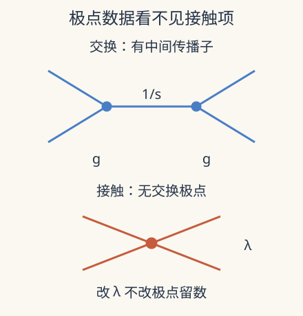

本页目录
现代场论方法 III · 散射振幅：极点告诉我们哪些信息，哪些没有
先修：散射理论、Feynman 图、共形 bootstrap。本讲从四点树级模型推导因子化与局域项，再说明复动量递归的条件。完整圈图、红外处理与实验截面需要更多场论先修。
知道每个中间粒子的极点，是否就知道全部散射答案？
1. 先把运动学与动力学分开
在四维平直时空，两个无质量粒子散射成两个无质量粒子。以入射动量 \(p_1,p_2\)、出射动量 \(p_3,p_4\) 定义
取度规符号 \((+---)\)，由动量守恒与 \(p_i^2=0\) 得 \(s+t+u=0\)。质心系中，若散射角为 \(\theta\)、\(c=\cos\theta\)，
\(s\) 是质心能量的平方，不是能量本身。物理区域有 \(s>0,t,u\le0\)；前向或后向端点会碰到无质量交换极点。振幅可以为负或复数，它不是概率；截面还要用模平方、流量因子与末态相空间。
2. 一个能逐项检查的树级模型
用形式上的标量三次顶点 \(g\) 和四次局域项 \(\lambda\) 作教学模型。若相互作用拉格朗日量取 \(-g\phi^3/3!-\lambda\phi^4/4!\)，剥去共同的顶点符号后定义 \(\mathcal A=-\mathcal M\)，树级结果为
这一定义固定了全局符号，避免与别的教材的 \(i\mathcal M\) 约定争论。三项表示三种交换通道，\(\lambda\) 是没有中间传播子的接触贡献。四维中 \(g\) 有能量单位、\(\lambda\) 无量纲，因此每项振幅均无量纲。
纯实无质量 \(\phi^3\) 势不能提供稳定的非微扰真空；本课把它当成演示树级极点代数的形式模型，不宣称一套稳定物质理论。也不在极点上给出有限探测器的可测截面。增加质量、合适背景与红外定义会改变物理问题，不能仅靠给分母随意加小数解决。

3. 因子化为何留下盲区
把振幅延拓到能研究 \(s\to0\) 的运动学区域，同时令另一个独立不变量保持非零。此时
这个留数是两个三点耦合的乘积。一般情况下，要对中间粒子允许的种类与极化求和；物理原因是传播子在壳附近投影到可传播的中间态。因子化与局域性、幺正性相联系，是复杂答案的重要检查。
但 \(\lambda\) 被乘上的 \(s\) 消掉了。任意改变它，都不改变这三个交换极点的留数。更高导数的局域算符还可给出 \(s,t,u\) 的多项式贡献。因此“全部极点正确”不是“整个振幅正确”，正如上一讲通过一个 crossing 特例不等于确定所有 CFT 数据。
要固定接触项，需要额外输入，例如高能行为、对称性、软极限、有效理论阶数或独立实验。不同输入提供不同强度的约束，不能把某一模型里恰好唯一的答案升格成普遍原则。
4. 把量纲与角度一起放进实验
实验固定 \(s=1\) 个能量平方单位，控制无量纲 \(\hat g=g/\sqrt s\)、接触项 \(\lambda\) 和 \(c\)。于是
先预测：调节 \(\lambda\) 能否消掉前向极点？将散射角映成 \(\pi-\theta\) 后，哪两个通道交换？
改变缩放耦合、接触项与角度，比较总振幅和交换部分。角度范围避开前后向极点。
默认静态核对：\(\hat g=1,\lambda=0,c=0\) 时，\(s=1,t=u=-1/2\)，三通道贡献为 \(1,-2,-2\)，总和 \(-3\)。若 \(\lambda=2\)，总和变为 \(-1\)，但 \(s\) 道留数仍为 \(g^2\)。此处用实验固定的参考 \(s\) 归一化留数，取极点时保持维数耦合 \(g\) 固定。图只画 \(c\in[-0.9,0.9]\)，未画到端点不表示那里没有奇点。
增大 \(\hat g\) 使交换项按平方改变；实际改变碰撞能量时，若维数耦合 \(g\) 固定，\(\hat g\) 会随之变化。滑块是归一化参数实验，不能把它解释成同时固定所有物理量的能量扫描。
5. 复动量为什么能帮助递归
选两条外腿作复形变 \(p_i(z)=p_i+zq\)、\(p_j(z)=p_j-zq\)，要求 \(q^2=q\cdot p_i=q\cdot p_j=0\)。这样总动量和外腿壳条件保持不变，振幅成为复变量 \(z\) 的函数。树级局域理论通常给有理函数，有限极点来自中间传播子上壳。
对 \(\mathcal A(z)/z\) 用留数定理，原点留数就是 \(\mathcal A(0)\)。其他极点的留数由较低点振幅的乘积得到；只有无穷远边界贡献能被控制时，这才成为封闭递归。某些 Yang–Mills 螺旋度形变在大 \(z\) 有足够好衰减，是 BCFW 递归的关键条件。
常数接触项在大 \(z\) 不消失，正好说明边界项为何不能默认删掉。无论推导写得多短，都要说明所选形变、理论和大 \(z\) 行为。圈图还会出现分支切割与积分结构，不能照搬树级有限极点求和。
6. 研究窗口：从平直振幅到 AdS 关联
现代振幅方法还研究颜色—运动学关系、双拷贝及广义幺正切割。这些结构需要特定表示、规范与理论条件，“引力是规范理论的平方”只能作为入口；直接把任意一个总振幅平方通常不产生正确引力振幅。
Zhou 的 2026-09-02 Pre-Strings 理论讲义把这一问题推进到 AdS 全息关联函数：Mellin 变量中的极点和多项式结构可分别对应交换与接触贡献。其核心示例处于四维 \(\mathcal N=4\) 理论的经典 IIB 超引力对偶区间，并讨论高点、圈和弦修正的扩展。
AdS 的边界条件不同于平直时空无穷远的入射、出射态，所以这里的关联函数不能未经极限就当作普通实验的 S 矩阵。研究价值在于利用类似的解析约束组织可观测量，而不是把曲率背景偷偷删掉。进一步读论文时，应明确给出的到底是边界关联、Mellin 表示，还是取平直极限后的振幅。
7. 两道迁移题
题 1。 加入接触多项式 \(b(s^2+t^2+u^2)\)，其中 \(b\) 的单位是什么？它会改变简单交换极点的留数吗？
核对题 1
每个不变量有能量平方单位，故 \(b\) 应有能量负四次方单位，使振幅无量纲。多项式在简单交换极点处有限，不改变留数，但会改变高能增长与有限角度散射。
题 2。 实验把 \(c\) 换成 \(-c\)，总振幅是否变化？为何这不足以检验全部 crossing 性质？
核对题 2
\(t,u\) 互换，总振幅不变。这只检查了一个物理角度对称操作；完整 crossing 还涉及不同入出粒子解释与解析延拓，不能用一条偶函数曲线替代。
速查与原始阅读
\(s+t+u=0\)；交换极点的留数由低点数据决定，局域接触项可保留自由。递归必须控制复动量无穷远边界；模型振幅不等于未加相空间的概率。
- Elvang、Huang：Scattering Amplitudes，2013 年首发的作者讲义，覆盖壳上变量、递归与幺正方法。
- Britto、Cachazo、Feng、Witten：树级 Yang–Mills 递归直接证明，2005 年原始理论论文；依赖复形变和大参数行为。
- Zhou：全息关联函数与解析 bootstrap，2026-09-02 理论讲义预印本；AdS 关联与平直振幅的区别见正文。
来源核查：2026-09-08。下一讲：广义对称性与 Wilson 环路。
基础衔接与计算验收
若还不能从连通关联函数中提取物理振幅，请先完成LSZ 与外腿归一化的两道验收题；这里讨论的内部因子化极点，不应与尚未截去的外腿极点混淆。
连续训练：从关联函数到振幅用四份账本检查外腿归一化、同处方减法、参数匹配和内部极点。